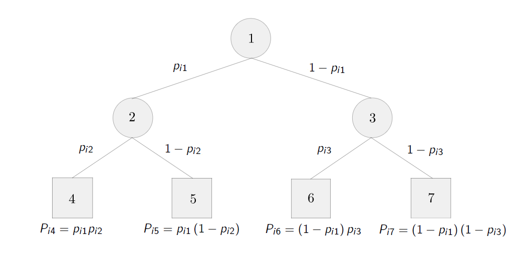
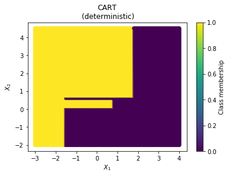
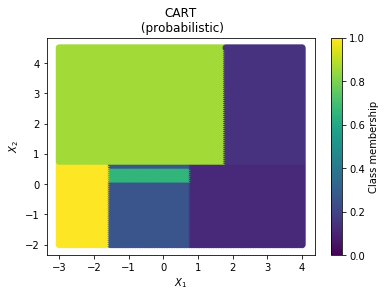
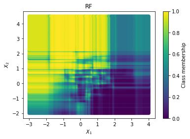
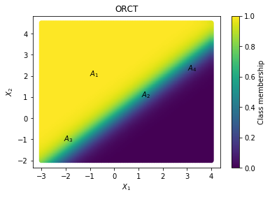

- 平均正解率 88.4%（深さ 4）UCI の 13 データでのテスト正解率の平均。CART は 86.1%、混合整数最適化の OCT-H MIO は 86.3%、ランダムフォレストは 90.0%（論文 Table 5）。
- 変数の数は \(N\) によらない決定変数は分岐の係数と葉のクラスだけで、データの件数 \(N\) が増えても問題の大きさは変わらない。0/1 のクラス変数は最適性を失わずに連続に緩和できる（定理 1）。
- 陽性の正解率 56.4% → 80.9%Pima の糖尿病データで、学習データの陽性の正解率に 85% 以上の制約をかけたときのテストデータの値。陰性の正解率は 87.8% から 66.6% に下がった。
混合整数最適化による最適な木はデータの行き先を整数変数で表すので、データの次元が増えると計算時間が大きく伸びる
CART は分岐に使う変数としきい値を 1 つずつ貪欲に決めるので速いが、精度では他の方法に劣ることがあり、クラスごとの誤分類率のような重要な指標も制御しにくい。最近の最適な決定木（Bertsimas と Dunn の OCT や Verwer と Zhang の方法など）は、分岐するかどうかや、各データが根からどの葉へ進むかを離散の決定変数で表し、混合整数最適化で解く。論文は整数計画による方法の大きな欠点として計算時間を挙げる。データの次元が増えると計算時間が大きく伸び、扱えるのは中程度の大きさの問題に限られる。
論文の方針は斜めの分岐（複数の変数の線形結合による分岐）を使うことと、分岐を 1 つずつではなく木全体で同時に決めることの 2 つである。そのうえで分岐の判断を確率的にすることで、整数変数をなくした連続最適化の問題にする。
各ノードで左に進む確率を累積分布関数で表すと、どのデータもすべての葉に確率つきで届く
深さ \(D\) の完全二分木を最初から用意する。予測変数は \([0, 1]\) に尺度をそろえておく。分岐ノード \(t\) の係数を \(a_{jt} \in [-1, 1]\)、位置のパラメータを \(\mu_t \in [-1, 1]\) とし、0 を中心とする連続な累積分布関数 \(F\) を使って、データ \(i\) がノード \(t\) で左に進む確率を次のように定める。葉 \(t\) に着く確率は、根からの経路上で左に進んだノードの \(p_{it}\) と、右に進んだノードの \(1 - p_{it}\) の積である（図1）。

葉 \(t\) にクラス \(k\) を割り当てるかどうかを \(C_{kt}\) で表し、各葉にクラスを 1 つ、各クラスに葉を少なくとも 1 つ割り当てる（少数派のクラスがすべて誤分類されるのを防ぐ制約で、外すこともできる）。データ \(i\) が真のクラス \(y_i\) でありながらクラス \(k\) に分類されるコストを \(W_{y_i k}\) とし、誤分類のコストの期待値を最小にする。
\(F\) が連続なので、クラスの所属確率 \(\sum_t P_{it} C_{kt}\) は予測変数について連続に変わる。CART では、しきい値をわずかに越えただけで右に進む確率が 0 から 1 に跳ぶ。シミュレーションのデータ（2 クラス、\(p = 2\)、\(N = 400\)）で比べると、深さ 1 の ORCT の所属確率は斜めの分岐をまたいでなめらかに変わった（図2）。分岐の真上の点 \(A_2\) ではクラス 1 の確率が 0.5077 と、ほとんど判別しない値になる。




図2 シミュレーションのデータでのクラス 1 の所属確率（論文 Fig. 4、arXiv 版。図中の色は論文のもので、このページの色の意味とは対応しない）。
クラスの割り当ての 0/1 変数は最適性を失わずに連続に緩和でき、ランダムさを 0 に近づけると決定的な最適な木に近づく
- 連続への緩和（定理 1）：\(C_{kt} \in \{0, 1\}\) を \(C_{kt} \ge 0\) に緩めても、\(C\) が 0/1 の最適解が存在する。\((\boldsymbol a, \boldsymbol\mu)\) を固定すると \(C\) についての問題は輸送問題になり、整数の最適解をもつからである。こうして ORCT は混合整数の非線形問題から、非線形の連続最適化問題（NLCO）になる。
- 決定的な木との関係（命題 1）：ロジスティック関数 \(F_\gamma(s) = 1/(1 + e^{-\gamma s})\) のように \(\gamma \to \infty\) で階段関数に近づく分布の族を使うと、\(\gamma \to \infty\) の極限で ORCT は決定的な最適分類木（ODCT）に一致する。論文は、\(\gamma\) を大きくしたほぼ決定的な分岐の ORCT が、Bertsimas と Dunn が報告した決定的な木より良い結果になることを実験で示している。
- 一致性（定理 2）：実行可能領域は学習データによらず、目的関数はデータについて分かれた和なので、ORCT は真の確率的な問題の標本平均近似とみなせる。データが独立同分布なら、\(N \to \infty\) で最適値と最適解の集合は真の問題のものに確率 1 で収束する。
同じ枠組みで二つの変種も示している。一つはクラス \(k\) の正解率の期待値に下限 \(\rho_k\) を課す制約 \(\sum_{i \in I_k}\sum_{t} P_{it} C_{kt} \ge \rho_k |I_k|\) で、誤分類のコストを調整するより直接に、重要なクラスの性能を制御できる。もう一つは、葉に実数の予測値を置いて二乗誤差の平均を最小にする回帰の木（ORRT）で、のちに同じ著者らが Sparse ORT で詳しく扱っている。
UCI の 13 データで、ORCT の平均正解率は CART と混合整数最適化の OCT-H MIO を上回り、局所探索の OCT-H LS とランダムフォレストに近づいた
UCI の 13 データ（2 クラスが 8 個、3〜4 クラスが 5 個。\(N\) は 150〜19,020）を使い、75% で学習して 25% でテストすることを 10 回繰り返した。ORCT はロジスティック関数で \(\gamma = 512\) とし、等しい誤分類のコストのもとで、ランダムな初期値から 20 回解いた（Pyomo と IPOPT 3.11.1）。比べたのは CART、OC1、oblique.tree、同じ深さの斜めの木を混合整数最適化で求める OCT-H MIO、深さ 10 までの局所探索のヒューリスティックによる OCT-H LS、ランダムフォレストである。OCT-H MIO と OCT-H LS の値はそれぞれの論文からの引用で、OCT-H MIO には Magic-gamma-telescope の値がない。
| 深さ | CART | OC1 | oblique.tree | OCT-H MIO | OCT-H LS | RF | ORCT | ORCT の平均時間 |
|---|---|---|---|---|---|---|---|---|
| \(D = 1\)（2 クラスの 8 データ） | 82.6 | 80.3 | 83.5 | 82.1 | 85.1 | 87.0 | 83.9 | 35 秒 |
| \(D = 2\)（13 データ） | 86.1 | 85.5 | 88.1 | 86.0 | 89.2 | 90.0 | 87.9 | 92 秒 |
| \(D = 3\)（13 データ） | 86.1 | 85.5 | 88.1 | 86.5 | 89.2 | 90.0 | 88.2 | 349 秒 |
| \(D = 4\)（13 データ） | 86.1 | 85.5 | 88.1 | 86.3 | 89.2 | 90.0 | 88.4 | 1,057 秒 |
表1 テスト正解率（%）の全データ平均（論文 Table 2〜5、arXiv 版）。CART、OC1、oblique.tree、RF は深さを制限しない木で、どの行も同じ値になる。OCT-H LS は深さ 10 までの木。
深さ 1（斜めの分岐 1 本）でも、ORCT は CA と MGT 以外のデータで CART を上回った。論文は差が 1 ポイント未満なら同程度とみなし、平均では ORCT が CART、OC1、OCT-H MIO を上回り、oblique.tree と同程度で、OCT-H LS とランダムフォレストに近いとまとめている。平均の順位は、深さ 2〜4 で ORCT が 3.2、3.2、3.1、OCT-H LS が 3.2、3.1、3.1 とほぼ並ぶ（論文は ORCT の平均順位がわずかに良いと書いているが、表の値はほぼ同じである）。一方、TDAT（Thyroid）のように CART や OCT-H LS に大きく負けるデータもある。計算時間は深さとともに増え、深さ 4 の平均は 1,057 秒、最大は MGT の 5,603 秒だった。論文は、OCT-H MIO には 5〜15 分の時間制限（パラメータの調整には別に 60 秒の制限）が課されていたことと比べ、ORCT の計算時間は短いと述べている。
陽性クラスの正解率に下限を課すと、テストでの陽性の正解率は下限とともにほぼ直線的に上がった
Pima の糖尿病データ（768 人、8 変数、陽性 35%）では、制約なしの ORCT の陽性の正解率（TPR）は学習で 60.8%、テストで 56.4% と低い。糖尿病の人を見逃すほうが逆の誤りより重大なので、学習データの TPR に下限 \(\rho_+\) を課し、62.5% から 85% まで 2.5 ポイントずつ変えた。下限は学習データでは満たされ、テストでは満たされるとは限らないが、テストの TPR も下限とともに上がった。
| 下限 \(\rho_+\) | TPR 学習 | TPR テスト | TNR 学習 | TNR テスト | 正解率 学習 | 正解率 テスト |
|---|---|---|---|---|---|---|
| 0（制約なし） | 60.8 | 56.4 | 90.5 | 87.8 | 80.3 | 76.2 |
| 70.0 | 71.1 | 64.3 | 83.6 | 81.8 | 79.3 | 75.3 |
| 77.5 | 78.9 | 72.9 | 77.2 | 75.9 | 77.8 | 74.6 |
| 85.0 | 86.5 | 80.9 | 68.4 | 66.6 | 74.6 | 71.6 |
表2 Pima の糖尿病データでの陽性の制約の結果（%、論文 Table 6 から 4 行を抜粋）。
下限に対する TPR の回帰直線は、学習で \(\mathrm{TPR}_{\text{train}} = -0.36 + 1.02\rho_+\)（\(R^2 = 0.9993\)）、テストで \(\mathrm{TPR}_{\text{test}} = -0.65 + 0.94\rho_+\)（\(R^2 = 0.9754\)）だった。下限によらない過学習があるものの、テストで欲しい TPR から課すべき下限を逆算できる。その代わり、陰性の正解率（TNR）は下限を上げるほど下がる。論文は CART、OC1、oblique.tree、ランダムフォレストのようなヒューリスティックではこうした制約を直接扱えない点を、ORCT の利点に挙げている。
整数変数をなくして連続最適化で解く方法で、得られる木は局所解であり、斜めの分岐はすべての変数を使う
- 何を最適にするか：深さ \(D\) の完全二分木を固定し、斜めの分岐の係数と葉のクラスを、誤分類コストの期待値で同時に決める。問題は非凸で、IPOPT のような局所的な解法をランダムな初期値から 20 回走らせるので、得られるのは局所解である。混合整数最適化と違い、大域的な最適性の証明はない。
- 確率的な予測：予測は本来確率的で、同じ葉に入るデータに同じ確率を割り当てる従来の木と違い、データごとに所属確率が変わる。実験では所属確率が最大のクラスを予測に使った。
- 残された課題：結論では木のバギング、より深い木のための局所探索への組み込み、L1 正則化で使う変数の数を減らすことを、今後の課題に挙げている。最後の課題は、同じ著者らの Sparse ORCT（2020）と Sparse ORT（2022）が扱っている。
@article{blanquero2021optimal,
title = {Optimal randomized classification trees},
author = {Blanquero, Rafael and Carrizosa, Emilio and Molero-R{\'\i}o, Cristina and Romero Morales, Dolores},
journal = {Computers \& Operations Research},
volume = {132},
pages = {105281},
year = {2021},
doi = {10.1016/j.cor.2021.105281}
}
ページの数値と図は arXiv 2110.11952 v1（2021 年 10 月、journal-ref に Computers & Operations Research 2021 とある改訂稿）による。出版社（Elsevier）の掲載版の本文は確認していない。書誌情報は Crossref による。所属は arXiv 版の表記（CBS の所在地の綴りは arXiv 版では Frederiskberg だが、Frederiksberg とした）。